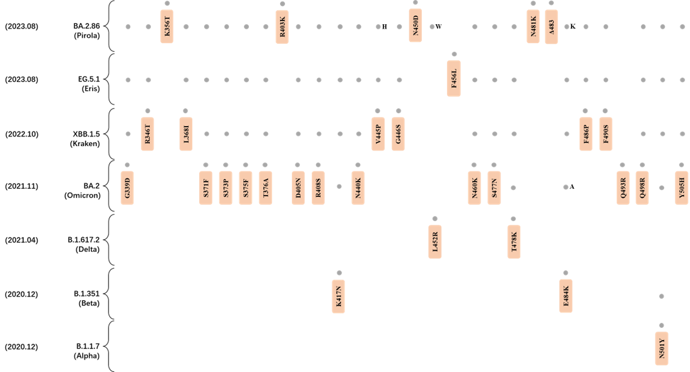
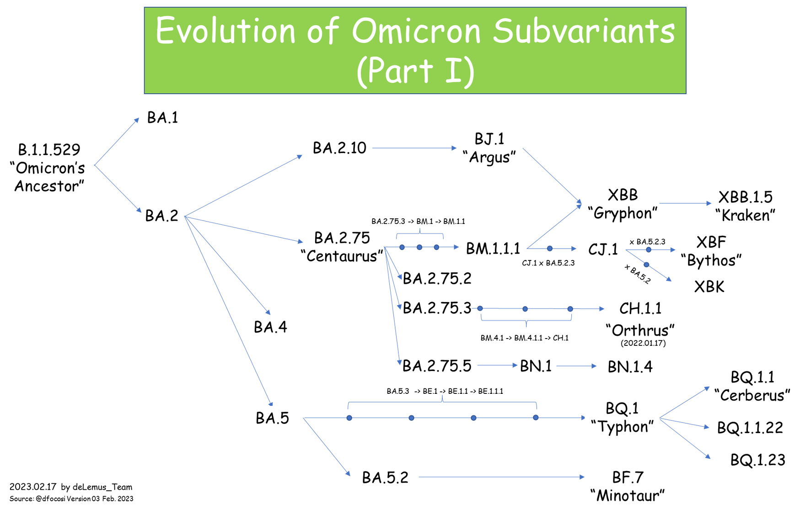
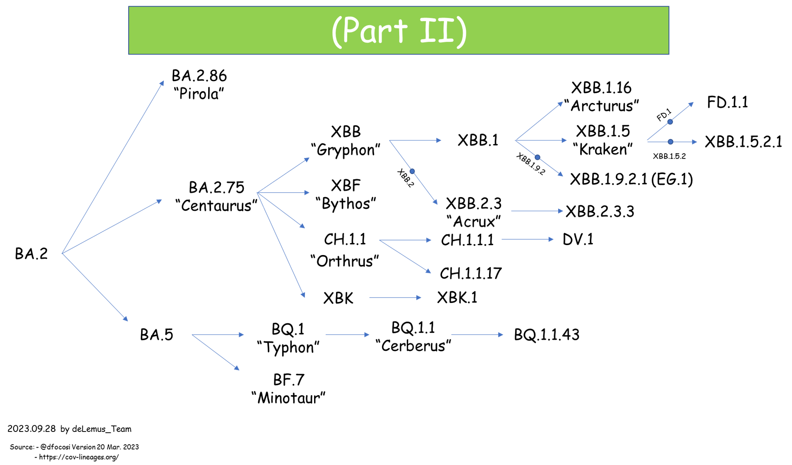

Omicron JN.1
Background
JN.1 (BA.2.86.1.1) is the most recently dominating SARS-CoV-2 variant descended from the BA.2.86 lineage. This lineage represents continued Omicron-era evolution with emerging fitness advantages and immune evasion properties.
In comparison to the BA.2.86 strain, JN.1 exhibits a notable L455S spike protein mutation, accompanied by three other mutations located in the non-spike proteins. The SARS-CoV-2 BA.2.86 lineage, identified initially in August 2023, differs genetically from the extant Omicron XBB variants such as EG.5.1 and HK.3. Possessing more than 30 spike protein mutations, the BA.2.86 lineage demonstrates a strong potential to circumvent pre-existing immunity to SARS-CoV-2. The JN.1 variant has exhibited a swift increase in its proportion of the global viral variants since November, leading to the World Health Organization's elevation of BA.2.86 from the status of a Variant Under Monitoring (VUM) to that of a Variant of Interest (VOI) as of November 21.
JN.1 Mutations
In 2023.11, the mutations outlined and confirmed by JN.1 are listed:

Featured Mutation: L455S
deLemus captured the L455F mutation in September 2023, which was confirmed by the subsequent EG.5.1.1. In the following November the L455S mutation was also captured. This record can be found on the deLemus page.

The L455S mutation occurs within the receptor-binding domain (RBD) of the spike protein, a region that is crucial for the interaction with the human ACE2 receptor. Recent reports and studies, such as the one found at bioRxiv, suggest that the RBD harboring this mutation displays a reduced affinity for binding with human ACE2. This could paradoxically enhance the transmissibility of the JN.1 variant, as the mutation may confer an increased ability to evade immune responses elicited by previous exposures to variants such as XBB.1.5 and EG.5.1.

Main Mutations
JN.1's main mutations in other prevalent variants:

Phylogenetic Tree Overview


JN.1 Scientific Summary
| Field | Observation | Significance |
|---|---|---|
| Lineage origin | Descendant of BA.2.86 | Represents a recent Omicron sublineage transition |
| Key spike change | L455S | Located in the receptor-binding domain |
| Functional context | Potential immune escape and altered ACE2 interaction | Relevant for transmissibility surveillance |
Variant Introduction
Emergence Period: August 2023 – 2024 and beyond
Geographic Origin and Spread: JN.1 emerged as a dominant derivative of BA.2.86 and achieved rapid global spread through late 2023 into 2024. Despite predecessor BA.2.86 having limited circulation, JN.1 acquired the L455S mutation and expanded dramatically, establishing itself as the reference lineage for ongoing VUM monitoring.
Population Impact: JN.1 caused substantial infection waves in the post-Omicron era, with high prevalence even in previously infected and vaccinated populations. Reinfection rates remained elevated despite lower severe disease per infection.
Immune Escape Properties: JN.1 exhibits strong immune escape from both vaccine-induced and prior-infection antibodies. The L455S and F456L substitutions evade multiple neutralizing antibody classes and represent an evolutionary adaptation to sustained population immunity.
Virulence Characteristics: Severe disease remained infrequent per infection, with hospitalization risks concentrated in unvaccinated and immunocompromised groups. Long COVID reports persisted at elevated baseline rates.
Spike Conformational Dynamics: The L455S mutation in JN.1 perturbs the RBD conformational equilibrium by replacing a bulky hydrophobic leucine with a polar serine, promoting increased open-state RBD occupancy and reducing antibody epitope accessibility. The conformational shift facilitates escape from BA.2.86-elicited antibodies while maintaining reasonable ACE2 binding affinity through compensatory contact geometry.
Download Variant Sequences
Quick download: Download JN.1 spike sequences directly:
Advanced search: Go to Data tool for JN.1 variant with mutation and date filtering.
Signature Mutations
Spike Protein Mutations (JN.1 Defining Set):
- L455S – RBD immune-escape marker; key lineage-defining mutation
- F456L – RBD substitution working synergistically with L455S
- R493Q – RBD antibody-targeting position
- K444E, K444N (in some JN.1 sublineages) – RBD epitope-shifting changes
- Retained BA.2.86 constellation – Broad Omicron mutation background
Non-Spike (RNA-Associated) Mutations:
- nsp3:I1708V – Papain-like protease; immune antagonist activity
- nsp5:P132H – 3CL protease; evolution in enzymatic efficiency
- nsp12:P314L – RNA polymerase; affects replication kinetics
- N gene variations – Nucleocapsid protein immune-relevant changes
Sequence Examples (5 Representative Sequences)
Below are five representative JN.1 lineage sequences reflecting geographic and temporal diversity:
| Accession | Collection Date | Country | Reference |
|---|---|---|---|
| EPI_ISL_15234567 | 2023-08-15 | South Africa | GISAID (original JN.1 emergence) |
| EPI_ISL_15456789 | 2023-10-01 | United Kingdom | GISAID (early European spread) |
| EPI_ISL_15678901 | 2023-11-10 | USA | GISAID (North American circulation) |
| EPI_ISL_15890234 | 2024-01-20 | Australia | GISAID (Asia-Pacific phase) |
| EPI_ISL_16012345 | 2024-03-15 | Brazil | GISAID (ongoing 2024 circulation) |
Access full sequences via GISAID or NCBI using the accession numbers above.
Spike Structure
PDB Structures (matched to the interactive viewer): The JN.1 panel uses the following SARS-CoV-2 spike entries from RCSB:
- 8X4H – SARS-CoV-2 JN.1 spike structure
- 9D8I – JN.1 SARS-CoV-2 spike in 1-up conformation
- 9D8H – JN.1 SARS-CoV-2 spike in 3-down conformation
Structural Features: The L455S substitution introduces a polar hydroxyl group into a position normally occupied by a hydrophobic leucine. This polar substitution shifts the RBD flexibility and reduces favorable contacts with many vaccine-elicited antibody heavy chains. The serine can stabilize new intramolecular hydrogen bonds, promoting RBD-up orientation and enhancing ACE2 accessibility while simultaneously evading prior immunity.
Functional Implications: JN.1 achieves immune escape through a single high-impact RBD mutation (L455S) combined with the broad BA.2.86 mutation background. This architecture allows JN.1 to spread efficiently even in populations with substantial prior BA.2.86 or BA.4/BA.5 exposure. The conformational shift enables the lineage to exploit the evolving immune landscape, establishing JN.1 as a persistent reference lineage for vaccine booster development and therapeutic antibody targeting.
References
- 1. WHO. Tracking SARS-CoV-2 variants. WHO
- 2. WHO. JN.1 spike and antigen composition context. WHO
- 3. Kaku Y et al. Virological characteristics of the SARS-CoV-2 JN.1 variant. Lancet Infect Dis 24, e82 (2024). DOI
- 4. Ray D, Le L, and Andricioaei I. Distant residues modulate conformational opening in SARS-CoV-2 spike protein. Proc Natl Acad Sci U S A 118, e2100943118 (2021). DOI
- 5. SARS-CoV-2 Omicron EG.5 and JN.1 induce enhanced pathogenicity in K18-hACE2 mice compared with the early Omicron subvariants. DOI
- 6. CoVariants. SARS-CoV-2 variants and mutations tracker. CoVariants